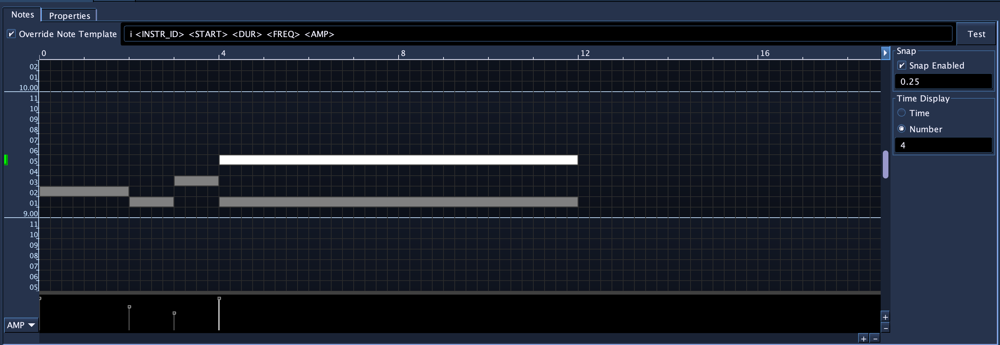
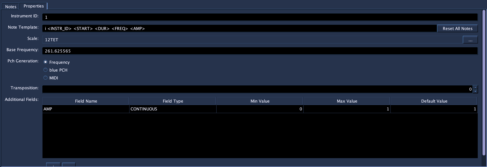
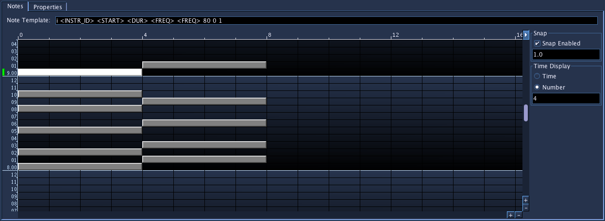

PianoRoll
Accepts NoteProcessors: yes
Piano Roll - Notes

The PianoRoll SoundObject is a graphical tool to enter in notes, commonly available in many MIDI sequencer environments. This PianoRoll is unique in that it is Microtonal: it supports loading any Scala scale file and editing of notes adapts to that scale. For example, in the picture above, the scale loaded is a Bohlen-Pierce scale with 13 tones to the tritave. The PianoRoll above has adapted to that scale to show 13 scale degrees per octave of its editor. The generated notes can output values as either frequency or PCH notation (octave.scaleDegree). But don't worry, if you're not interested in alternate tunings, the PianoRoll is set by default to use 12-TET tuning, the "standard" tuning system in use today.
The PianoRoll uses Note Template strings as a way to maintain flexibility and be able to handle the open-ended nature of Csound's instruments. Since the user who builds the instrument designs what each pfield will mean(besides p1, p2, and p3), the Note Template string should be made to match the instrument the user wants to use the PianoRoll with. When the note is generated, certain special text values (those enclosed in < and >) will be replaced by values unique to the note.
For example, the following Note Template string:
i<INSTR_ID> <START> <DUR> <FREQ> 0 1 1
Will have the <INSTR_ID> replaced with the value set in the Piano Roll properties, <START> replaced the start time for the note, <DUR> replaced with the duration of the note, and <FREQ> replaced with either a frequency or PCH value, depending on how the Piano Roll is configured in its properties. The other values will pass through as part of the note.
i<INSTR_ID> <START> <DUR> <FREQ> <FREQ> 0 1 1
i1 0 2 440 440 0 1 1
i<INSTR_ID> <START> <DUR> <FREQ><FREQ> 0 1 1
i1 0 2 440440 0 1 1
The PianoRoll requires a bit of configuration before using. The properties page below shows the properties that should be configure before using the actual note drawing canvas.
Piano Roll - Notes - Properties

-
Instrument ID
Instrument name or number to be used when replacing <INSTR_ID> in Note template strings. -
Note Template
The default note template when inserting notes. Notes make a copy of this template string when created and edits to the note's string stay with the note. Generally, you'll want to create a template string that will match the instrument this PianoRoll will be used with. -
Scale
The scale used with this PianoRoll. The PianoRoll defaults to a 12-TET scale, the "standard" scale in use in Western classical and popular music. Pressing the button labeled "..." will open a file browser for selecting Scala scales to use in place of the default. After selecting a scale, the PianoRoll will adjust the note canvas for the number of scale degrees the newly selected scale contains. -
Base Frequency
The base frequency of the scale for octave 8 and scale degree 0 (8.00). Defaults to C below A440. -
Pch Generation
Selects how the notes will generate their value to be used when replacing the <FREQ> tag value in a note template. The options are:-
Frequency
The value of the note's pitch expressed in terms of frequency in hertz. This value is calculated using the chosen Scale for the PianoRoll. -
Blue PCH
Value of note expressed in Blue PCH, a format similar to Csound PCH but differs in that it does not allow fractional values. Values are generated as "octave.scaleDegree" i.e. "8.22" would be octave 8 and scale degree 22 in a scale that has 23 or more notes, or would wrap around as it does in Csound PCH. If the scale had 12 scale degrees, the "8.22" would be interpreted as "9.10". Blue PCH is allowed as an option to be used with Blue PCH note processors and then to be used with the Tuning NoteProcessor. -
MIDI
When this Pch Generation method is chosen, a MIDI note value (0-127, 60 = Middle-C) is used for <FREQ> and the chosen Scale will not be used. The display for the editor will automatically switch to show octaves and notes for standard MIDI scale values. Using MIDI note values is useful for instruments that exepct MIDI note values such as the fluidsynth opcodes as well as midiout.
-
Piano Roll - Notes - Time Options

The Time Options in the PianoRoll are accessed and behave very much in the same manner as those that are in the main timeline. The button labelled "..." in the upper right corner of the PianoRoll canvas will open and close the panel on the right that contains the properties.
-
Snap Enabled
Enables snapping behavior on the timeline. If enabled, vertical lines will be drawn at snap points, set by the value below it. In the screenshot above, the snap is enabled and set to every 1.0 beats. -
Time Display
Controls how the time in the time bar above the PianoRoll canvas will display. The time value will show as time, while Number display will display as integers. The number below show how often to put a label. In the screenshot above, the Time Display is set to show a label in units of time and at every 5.0 seconds.
To enter notes, hold down the shift key and press the left mouse button down on the canvas. A note will be entered where you pressed and will be set to resize as you move the mouse around. When you finally release the mouse, the note will be finished entering.
After that, you can select notes by clicking on them or drag and selecting notes by marquee. You can also press the shift key and click on notes to add to the currently selected notes. You can then drag the notes around by click a selected note and dragging. To resize a note, select a single note, and after hilighted, move the mouse to the right edge of the selected now, and then click and drag.
To remove a note or notes, select the notes, then press the del key.
To cut or copy a note, select a single note (only one note in the buffer is currently supported), then press ctrl-x or ctrl-c to cut or copy, respectively.
To paste, ctrl-click on the PianoNote canvas. (This is the same behavior as pasting soundObjects on the main score timeline.)
To edit a note's template, select a single note. After selecting a note, the text field for editing the note's template text will be enabled. Here you can then edit the note's values.